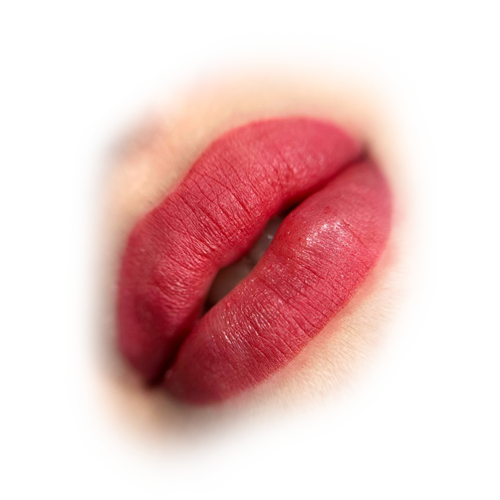
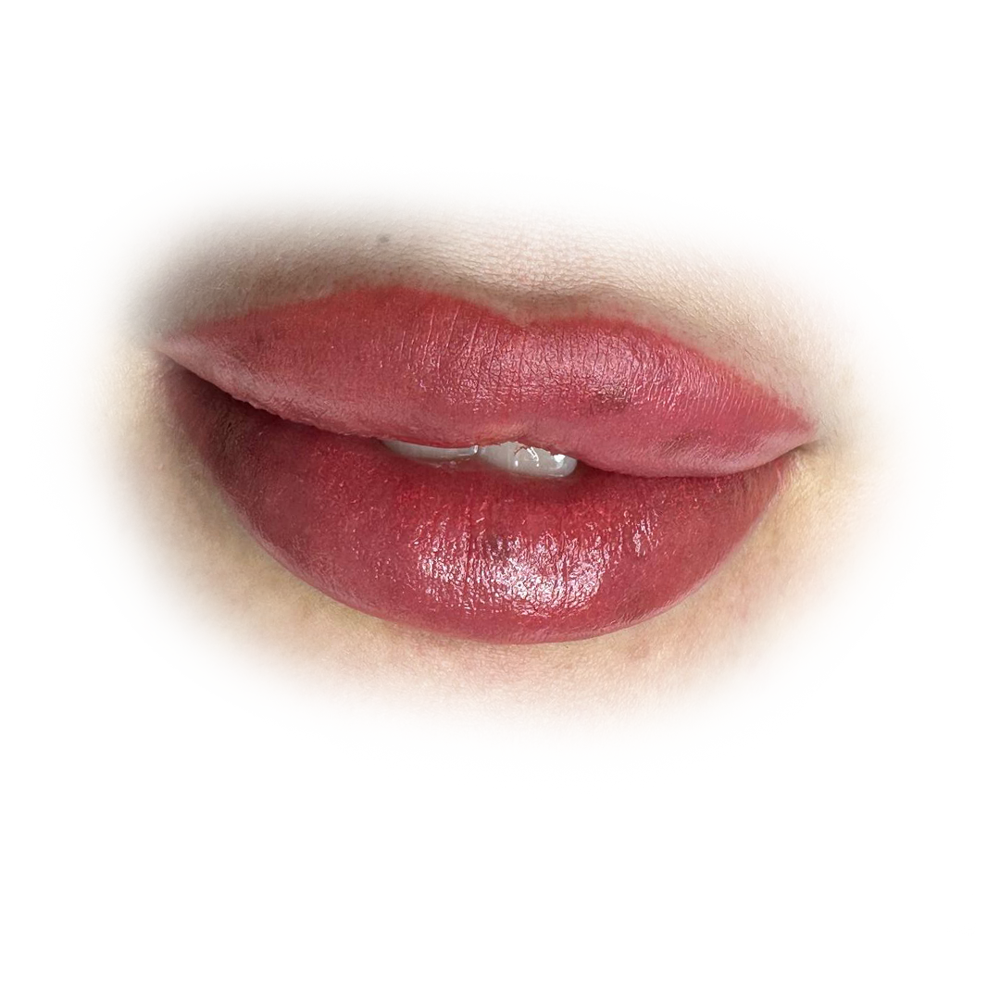

Kaş, dudak ve göz çizginizi her gün yeniden çizmek zorunda kalmayın. Uzman ekibimizle doğal, uzun ömürlü ve size özel kalıcı makyaj uygulamaları sunuyoruz.


El tekniğiyle tek tek kıl çizgileri oluşturularak doğal görünümlü, dolgun kaşlar elde edilir. 12–18 ay kalıcılık.
Makyaj efekti veren, içten dışa doğru açılan gölgeli kaş tekniği. Yağlı ve karma ciltler için idealdir.
Microblading ve ombre tekniklerinin birleşimi. Hem doğal hem de dolgun bir görünüm sunar.
Dijital makine ile uygulanan, su damlası efektli ultra doğal kaş tekniği. Hassas ciltler için uygundur.
Dudak sınırlarını belirginleştirerek daha şekilli ve çekici bir görünüm kazandırır.
Dudaklara doğal bir renk ve dolgunluk hissi veren, kontür ve dolgu tekniklerini birleştiren uygulama.
Dudağın tamamına renk pigmenti uygulanarak kalıcı ruj efekti elde edilir. Canlı ve belirgin dudaklar.
Üst veya alt göz kapağına ince ya da kalın çizgi uygulaması. Gözleri belirginleştirir, makyaj süresini kısaltır.
Kirpik dipleri arasına pigment uygulanarak kirpiklerin daha gür ve yoğun görünmesi sağlanır.